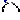
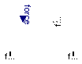
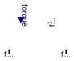
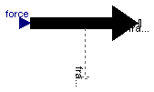
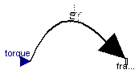

| Name | Description |
|---|---|
| Force acting between two frames, defined by 3 input signals | |
|  BasicTorque | Torque acting between two frames, defined by 3 input signals |
| External force acting at frame_b, defined by 3 input signals | |
| External torque acting at frame_b, defined by 3 input signals |
 Modelica.Mechanics.MultiBody.Forces.Internal.BasicForce
Modelica.Mechanics.MultiBody.Forces.Internal.BasicForce
The 3 signals of the force connector are interpreted as the x-, y- and z-coordinates of a force acting at the frame connector to which frame_b of this component is attached. Via parameter resolveInFrame it is defined, in which frame these coordinates shall be resolved:
| Types.ResolveInFrameAB. | Meaning |
|---|---|
| world | Resolve input force in world frame |
| frame_a | Resolve input force in frame_a |
| frame_b | Resolve input force in frame_b (= default) |
| frame_resolve | Resolve input force in frame_resolve (frame_resolve must be connected) |
If resolveInFrame = ResolveInFrameAB.frame_resolve, the force coordinates are with respect to the frame, that is connected to frame_resolve.
If resolveInFrame is not ResolveInFrameAB.frame_resolve, then the position vector and the orientation object of frame_resolve must be set to constant values from the outside in order that the model remains balanced (these constant values are ignored).
| Type | Name | Default | Description |
|---|---|---|---|
| ResolveInFrameAB | resolveInFrame | Modelica.Mechanics.MultiBody... | Frame in which force is resolved (1: world, 2: frame_a, 3: frame_b, 4: frame_resolve) |
| Type | Name | Description |
|---|---|---|
| Frame_a | frame_a | Coordinate system fixed to the component with one cut-force and cut-torque |
| Frame_b | frame_b | Coordinate system fixed to the component with one cut-force and cut-torque |
| Frame_resolve | frame_resolve | The input signals are optionally resolved in this frame |
| input RealInput | force[3] | x-, y-, z-coordinates of force resolved in frame defined by resolveInFrame [N] |
model BasicForce
"Force acting between two frames, defined by 3 input signals"
import Modelica.Mechanics.MultiBody.Types.ResolveInFrameAB;
extends Modelica.Mechanics.MultiBody.Interfaces.PartialTwoFrames;
Interfaces.Frame_resolve frame_resolve
"The input signals are optionally resolved in this frame";
Modelica.Blocks.Interfaces.RealInput force[3](each final quantity="Force", each
final unit="N")
"x-, y-, z-coordinates of force resolved in frame defined by resolveInFrame";
parameter Modelica.Mechanics.MultiBody.Types.ResolveInFrameAB resolveInFrame=
Modelica.Mechanics.MultiBody.Types.ResolveInFrameAB.frame_b
"Frame in which force is resolved (1: world, 2: frame_a, 3: frame_b, 4: frame_resolve)";
Modelica.SIunits.Position r_0[3]
"Position vector from origin of frame_a to origin of frame_b resolved in world frame";
Modelica.SIunits.Force f_b_0[3] "frame_b.f resoved in world frame";
equation
assert(cardinality(frame_resolve) > 0, "Connector frame_resolve must be connected at least once and frame_resolve.r_0/.R must be set");
frame_resolve.f = zeros(3);
frame_resolve.t = zeros(3);
if resolveInFrame == ResolveInFrameAB.frame_a then
f_b_0 = -Frames.resolve1(frame_a.R, force);
frame_b.f = Frames.resolve2(frame_b.R, f_b_0);
elseif resolveInFrame == ResolveInFrameAB.frame_b then
f_b_0 = -Frames.resolve1(frame_b.R, force);
frame_b.f = -force;
elseif resolveInFrame == ResolveInFrameAB.world then
f_b_0 = -force;
frame_b.f = Frames.resolve2(frame_b.R, f_b_0);
elseif resolveInFrame == ResolveInFrameAB.frame_resolve then
f_b_0 = -Frames.resolve1(frame_resolve.R, force);
frame_b.f = Frames.resolve2(frame_b.R, f_b_0);
else
assert(false, "Wrong value for parameter resolveInFrame");
f_b_0 = zeros(3);
frame_b.f = zeros(3);
end if;
frame_b.t = zeros(3);
// Force and torque balance
r_0 = frame_b.r_0 - frame_a.r_0;
zeros(3) = frame_a.f + Frames.resolve2(frame_a.R, f_b_0);
zeros(3) = frame_a.t + Frames.resolve2(frame_a.R, cross(r_0, f_b_0));
end BasicForce;
 Modelica.Mechanics.MultiBody.Forces.Internal.BasicTorque
Modelica.Mechanics.MultiBody.Forces.Internal.BasicTorque
The 3 signals of the torque connector are interpreted as the x-, y- and z-coordinates of a torque acting at the frame connector to which frame_b of this component is attached. Via parameter resolveInFrame it is defined, in which frame these coordinates shall be resolved:
| Types.ResolveInFrameAB. | Meaning |
|---|---|
| world | Resolve input torque in world frame |
| frame_a | Resolve input torque in frame_a |
| frame_b | Resolve input torque in frame_b (= default) |
| frame_resolve | Resolve input torque in frame_resolve (frame_resolve must be connected) |
If resolveInFrame = ResolveInFrameAB.frame_resolve, the torque coordinates are with respect to the frame, that is connected to frame_resolve.
If resolveInFrame is not ResolveInFrameAB.frame_resolve, then the position vector and the orientation object of frame_resolve must be set to constant values from the outside in order that the model remains balanced (these constant values are ignored).
| Type | Name | Default | Description |
|---|---|---|---|
| ResolveInFrameAB | resolveInFrame | Modelica.Mechanics.MultiBody... | Frame in which torque is resolved (1: world, 2: frame_a, 3: frame_b, 4: frame_resolve) |
| Type | Name | Description |
|---|---|---|
| Frame_a | frame_a | Coordinate system fixed to the component with one cut-force and cut-torque |
| Frame_b | frame_b | Coordinate system fixed to the component with one cut-force and cut-torque |
| Frame_resolve | frame_resolve | The input signals are optionally resolved in this frame |
| input RealInput | torque[3] | x-, y-, z-coordiantes of torque resolved in frame defined by resolveInFrame [N.m] |
model BasicTorque
"Torque acting between two frames, defined by 3 input signals"
import SI = Modelica.SIunits;
import Modelica.Mechanics.MultiBody.Types.ResolveInFrameAB;
extends Modelica.Mechanics.MultiBody.Interfaces.PartialTwoFrames;
Interfaces.Frame_resolve frame_resolve
"The input signals are optionally resolved in this frame";
Modelica.Blocks.Interfaces.RealInput torque[3](each final quantity="Torque", each
final unit="N.m")
"x-, y-, z-coordiantes of torque resolved in frame defined by resolveInFrame";
parameter Modelica.Mechanics.MultiBody.Types.ResolveInFrameAB resolveInFrame=
Modelica.Mechanics.MultiBody.Types.ResolveInFrameAB.frame_b
"Frame in which torque is resolved (1: world, 2: frame_a, 3: frame_b, 4: frame_resolve)";
SI.Position r_0[3]
"Position vector from origin of frame_a to origin of frame_b resolved in world frame";
SI.Torque t_b_0[3] "frame_b.t resoved in world frame";
equation
assert(cardinality(frame_resolve) > 0, "Connector frame_resolve must be connected at least once and frame_resolve.r_0/.R must be set");
frame_resolve.f = zeros(3);
frame_resolve.t = zeros(3);
r_0 = frame_b.r_0 - frame_a.r_0;
frame_a.f = zeros(3);
frame_b.f = zeros(3);
if resolveInFrame == ResolveInFrameAB.frame_a then
t_b_0 = -Frames.resolve1(frame_a.R, torque);
frame_b.t = Frames.resolve2(frame_b.R, t_b_0);
elseif resolveInFrame == ResolveInFrameAB.frame_b then
t_b_0 = -Frames.resolve1(frame_b.R, torque);
frame_b.t = -torque;
elseif resolveInFrame == ResolveInFrameAB.world then
t_b_0 = -torque;
frame_b.t = Frames.resolve2(frame_b.R, t_b_0);
elseif resolveInFrame == ResolveInFrameAB.frame_resolve then
t_b_0 = -Frames.resolve1(frame_resolve.R, torque);
frame_b.t = Frames.resolve2(frame_b.R, t_b_0);
else
assert(false, "Wrong value for parameter resolveInFrame");
t_b_0 = zeros(3);
frame_b.t = zeros(3);
end if;
// torque balance
zeros(3) = frame_a.t + Frames.resolve2(frame_a.R, t_b_0);
end BasicTorque;
 Modelica.Mechanics.MultiBody.Forces.Internal.BasicWorldForce
Modelica.Mechanics.MultiBody.Forces.Internal.BasicWorldForce
The 3 signals of the force connector are interpreted as the x-, y- and z-coordinates of a force acting at the frame connector to which this component is attached. Via parameter resolveInFrame it is defined, in which frame these coordinates shall be resolved:
| Types.ResolveInFrameB. | Meaning |
|---|---|
| world | Resolve input force in world frame (= default) |
| frame_b | Resolve input force in frame_b |
| frame_resolve | Resolve input force in frame_resolve (frame_resolve must be connected) |
If resolveInFrame = Types.ResolveInFrameB.frame_resolve, the force coordinates are with respect to the frame, that is connected to frame_resolve.
If resolveInFrame is not Types.ResolveInFrameB.frame_resolve, then the position vector and the orientation object of frame_resolve must be set to constant values from the outside in order that the model remains balanced (these constant values are ignored).
| Type | Name | Default | Description |
|---|---|---|---|
| ResolveInFrameB | resolveInFrame | Modelica.Mechanics.MultiBody... | Frame in which force is resolved (1: world, 2: frame_b, 3: frame_resolve) |
| Type | Name | Description |
|---|---|---|
| Frame_b | frame_b | Coordinate system fixed to the component with one cut-force and cut-torque |
| Frame_resolve | frame_resolve | The input signals are optionally resolved in this frame |
| input RealInput | force[3] | x-, y-, z-coordinates of force resolved in frame defined by resolveInFrame [N] |
model BasicWorldForce
"External force acting at frame_b, defined by 3 input signals"
import SI = Modelica.SIunits;
import Modelica.Mechanics.MultiBody.Types.ResolveInFrameB;
extends Interfaces.PartialOneFrame_b;
Interfaces.Frame_resolve frame_resolve
"The input signals are optionally resolved in this frame";
Modelica.Blocks.Interfaces.RealInput force[3](each final quantity="Force", each
final unit="N")
"x-, y-, z-coordinates of force resolved in frame defined by resolveInFrame";
parameter Modelica.Mechanics.MultiBody.Types.ResolveInFrameB resolveInFrame=
Modelica.Mechanics.MultiBody.Types.ResolveInFrameB.world
"Frame in which force is resolved (1: world, 2: frame_b, 3: frame_resolve)";
equation
assert(cardinality(frame_resolve) > 0, "Connector frame_resolve must be connected at least once and frame_resolve.r_0/.R must be set");
frame_resolve.f = zeros(3);
frame_resolve.t = zeros(3);
if resolveInFrame == ResolveInFrameB.world then
frame_b.f = -Frames.resolve2(frame_b.R, force);
elseif resolveInFrame == ResolveInFrameB.frame_b then
frame_b.f = -force;
elseif resolveInFrame == ResolveInFrameB.frame_resolve then
frame_b.f = -Frames.resolveRelative(force, frame_resolve.R, frame_b.R);
else
assert(false, "Wrong value for parameter resolveInFrame");
frame_b.f = zeros(3);
end if;
frame_b.t = zeros(3);
end BasicWorldForce;

The 3 signals of the torque connector are interpreted as the x-, y- and z-coordinates of a torque acting at the frame connector to which this component is attached. Via parameter resolveInFrame it is defined, in which frame these coordinates shall be resolved:
| Types.ResolveInFrameB. | Meaning |
|---|---|
| world | Resolve input torque in world frame (= default) |
| frame_b | Resolve input torque in frame_b |
| frame_resolve | Resolve input torque in frame_resolve (frame_resolve must be connected) |
If resolveInFrame = Types.ResolveInFrameB.frame_resolve, the torque coordinates are with respect to the frame, that is connected to frame_resolve.
If resolveInFrame is not Types.ResolveInFrameB.frame_resolve, then the position vector and the orientation object of frame_resolve must be set to constant values from the outside in order that the model remains balanced (these constant values are ignored).
| Type | Name | Default | Description |
|---|---|---|---|
| ResolveInFrameB | resolveInFrame | Modelica.Mechanics.MultiBody... | Frame in which torque is resolved (1: world, 2: frame_b, 3: frame_resolve) |
| Type | Name | Description |
|---|---|---|
| Frame_b | frame_b | Coordinate system fixed to the component with one cut-force and cut-torque |
| Frame_resolve | frame_resolve | The input signals are optionally resolved in this frame |
| input RealInput | torque[3] | x-, y-, z-coordinates of torque resolved in frame defined by resolveInFrame [N.m] |
model BasicWorldTorque
"External torque acting at frame_b, defined by 3 input signals"
import SI = Modelica.SIunits;
import Modelica.Mechanics.MultiBody.Types.ResolveInFrameB;
extends Interfaces.PartialOneFrame_b;
Interfaces.Frame_resolve frame_resolve
"The input signals are optionally resolved in this frame";
Modelica.Blocks.Interfaces.RealInput torque[3](each final quantity="Torque", each
final unit="N.m")
"x-, y-, z-coordinates of torque resolved in frame defined by resolveInFrame";
parameter Modelica.Mechanics.MultiBody.Types.ResolveInFrameB resolveInFrame=
Modelica.Mechanics.MultiBody.Types.ResolveInFrameB.world
"Frame in which torque is resolved (1: world, 2: frame_b, 3: frame_resolve)";
equation
assert(cardinality(frame_resolve) > 0, "Connector frame_resolve must be connected at least once and frame_resolve.r_0/.R must be set");
frame_resolve.f = zeros(3);
frame_resolve.t = zeros(3);
if resolveInFrame == ResolveInFrameB.world then
frame_b.t = -Frames.resolve2(frame_b.R, torque);
elseif resolveInFrame == ResolveInFrameB.frame_b then
frame_b.t = -torque;
elseif resolveInFrame == ResolveInFrameB.frame_resolve then
frame_b.t = -Frames.resolveRelative(torque, frame_resolve.R, frame_b.R);
else
assert(false, "Wrong value for parameter resolveInFrame");
frame_b.t = zeros(3);
end if;
frame_b.f = zeros(3);
end BasicWorldTorque;